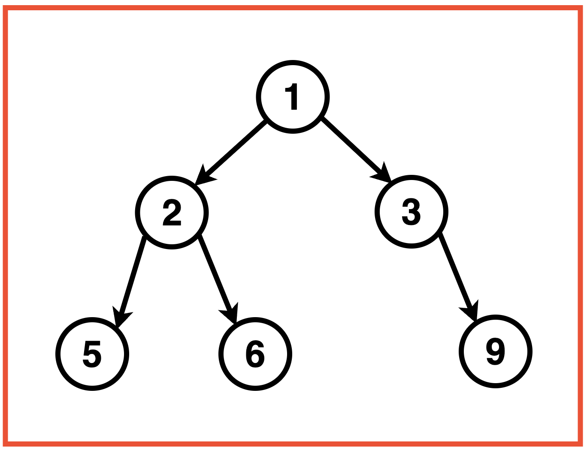
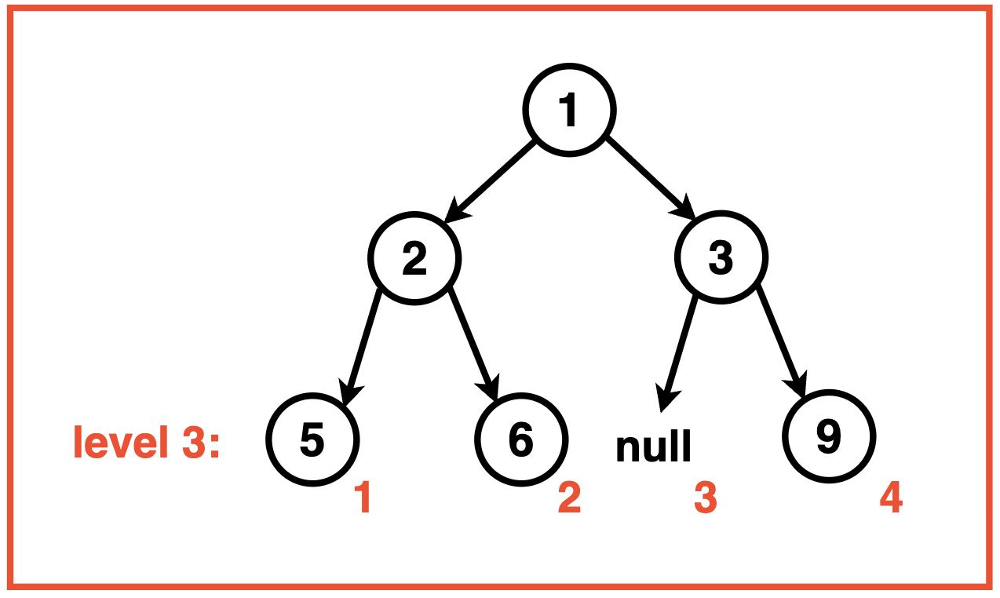
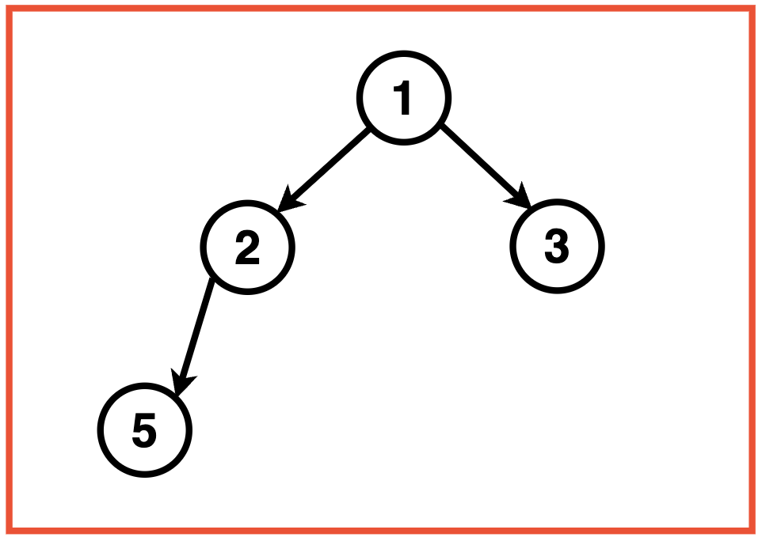
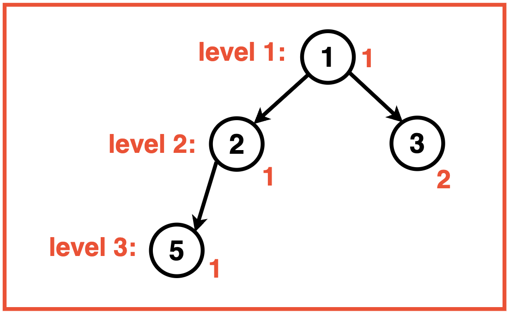
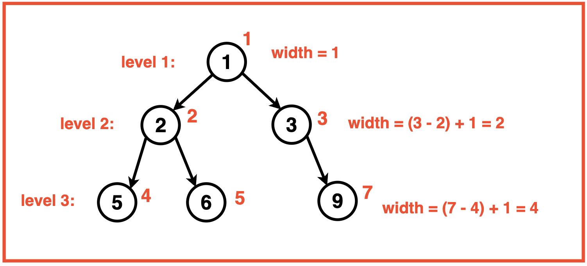
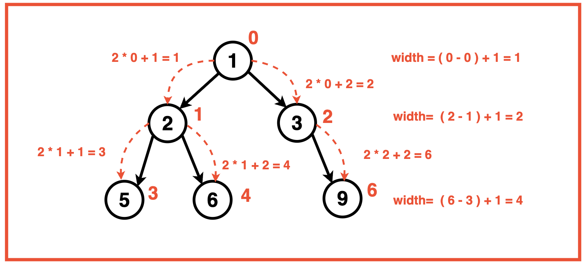
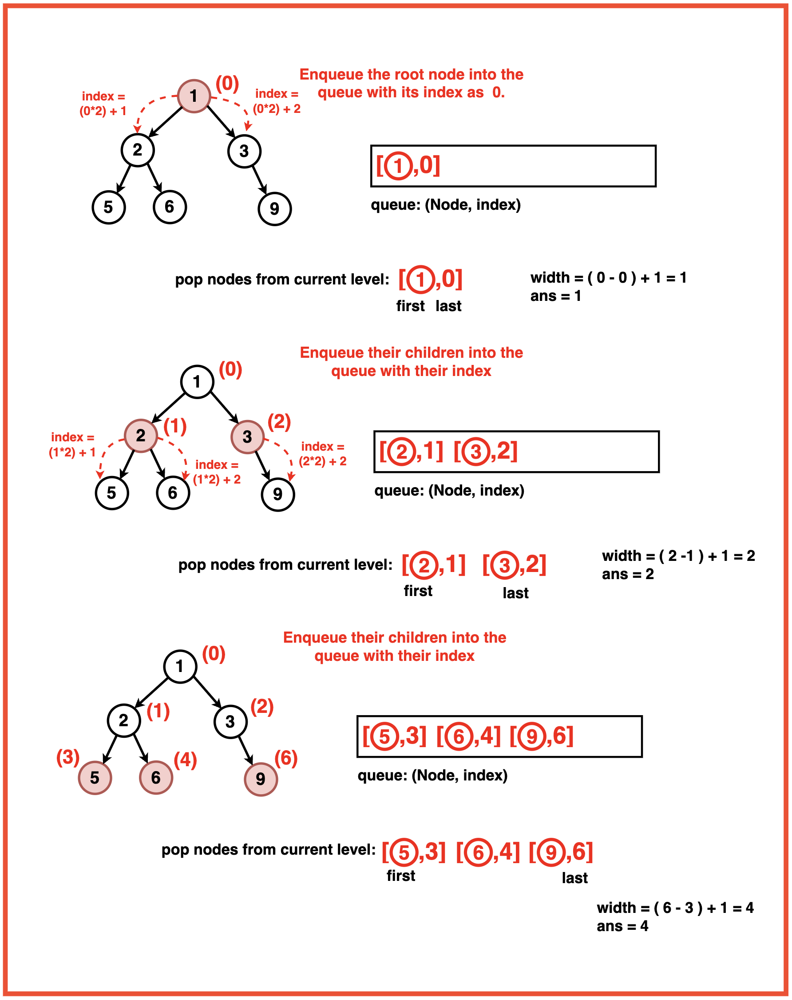

Problem Statement: Given a Binary Tree, return its maximum width.
The maximum width of a Binary Tree is the maximum diameter among all its levels. The width or diameter of a level is the number of nodes between the leftmost and rightmost nodes.
Examples
Example 1:Input:Binary Tree: 1 2 3 5 6 -1 9
Output: Maximum Width: 4Explanation: Level 3 is the widest level of the Binary Tree and whose end-to-end width is 4 comprising of nodes: {5, 6, null, 9}.Example 2:Input:Binary Tree: 1 2 3 5
Output : Maximum Width: 2Explanation: Level 2 is the widest level of the Binary Tree and whose end-to-end width is comprised of nodes: {2, 3}.
Disclaimer: Don’t jump directly to the solution, try it out
yourself first.
Optimal Approach
Algorithm / Intuition
To determine the maximum width of a tree, an effective strategy would be to assign and identify indexes for the leftmost and rightmost nodes at each level. Using these indexes, we can calculate the width for each level by subtracting the index of the leftmost node from that of the rightmost node.

Start by assigning an index to the root node as 0. For each level, the left child gets an index equal to 2 * parent index, and the right child gets an index equal to 2 * parent index + 1.
Using a level order traversal, we use the leftmost and rightmost nodes at each level and using their indices, get the width at that level. Keep track of the maximum width encountered during the traversal. Whenever a wider level is found, update the maximum width.

Algorithm:
Step 1:Initialize a variable `ans` to store the maximum width. If the root is null, return 0 as the width of an empty tree is zero.
Step 2: Create a queue to perform level-order traversal and each element of this queue would be a pair containing a node and its vertical index. Push the root node and its position (initially 0) into the queue.
Step 3:
While the queue is not empty, perform the following steps:
Get the number of nodes at the current level (size).
Get the position of the front node in the current level which is the leftmost minimum index at that level.
Initialize variables first and last to store the first and last positions of nodes in the current level.
Step 4: Backtracking:
For each node in the current level:
Calculate the current position relative to the minimum position in the level.
Get the current node (node) from the front of the queue.
If this is the first node in the level, update the first variable.
If this is the last node in the level, update the last variable.
Enqueue the left child of the current node with index: 2 x current index - 1.
Enqueue the right child of the current node with index: 2 x current index + 1.

Step 5: Update the maximum width (ans) by calculating the difference between the first and last positions, and adding 1.
Step 6: Repeat the level-order traversal until all levels are processed. The final value of `ans` represents the maximum width of the binary tree, return it.
Code
#include <iostream>
#include <unordered_map>
#include <vector>
#include <queue>
using namespace std;
// TreeNode structure
struct TreeNode {
int val;
TreeNode *left;
TreeNode *right;
TreeNode(int x) : val(x), left(nullptr), right(nullptr) {}
};
class Solution {
public:
// Function widthOfBinaryTree to find the
// maximum width of the Binary Tree
int widthOfBinaryTree(TreeNode* root) {
// If the root is null,
// the width is zero
if (!root) {
return 0;
}
// Initialize a variable 'ans'
// to store the maximum width
int ans = 0;
// Create a queue to perform level-order
// traversal, where each element is a pair
// of TreeNode* and its position in the level
queue<pair<TreeNode*, int>> q;
// Push the root node and its
// position (0) into the queue
q.push({root, 0});
// Perform level-order traversal
while (!q.empty()) {
// Get the number of
// nodes at the current level
int size = q.size();
// Get the position of the front
// node in the current level
int mmin = q.front().second;
// Store the first and last positions
// of nodes in the current level
int first, last;
// Process each node
// in the current level
for (int i = 0; i < size; i++) {
// Calculate current position relative
// to the minimum position in the level
int cur_id = q.front().second - mmin;
// Get the current node
TreeNode* node = q.front().first;
// Pop the front node from the queue
q.pop();
// If this is the first node in the level,
// update the 'first' variable
if (i == 0) {
first = cur_id;
}
// If this is the last node in the level,
// update the 'last' variable
if (i == size - 1) {
last = cur_id;
}
// Enqueue the left child of the
// current node with its position
if (node->left) {
q.push({node->left, cur_id * 2 + 1});
}
// Enqueue the right child of the
// current node with its position
if (node->right) {
q.push({node->right, cur_id * 2 + 2});
}
}
// Update the maximum width by calculating
// the difference between the first and last
// positions, and adding 1
ans = max(ans, last - first + 1);
}
// Return the maximum
// width of the binary tree
return ans;
}
};
int main() {
TreeNode* root = new TreeNode(3);
root->left = new TreeNode(5);
root->right = new TreeNode(1);
root->left->left = new TreeNode(6);
root->left->right = new TreeNode(2);
root->right->left = new TreeNode(0);
root->right->right = new TreeNode(8);
root->left->right->left = new TreeNode(7);
root->left->right->right = new TreeNode(4);
Solution sol;
int maxWidth = sol.widthOfBinaryTree(root);
cout << "Maximum width of the binary tree is: "
<< maxWidth << endl;
return 0;
}
import java.util.LinkedList;
import java.util.Queue;
// TreeNode structure
class TreeNode {
int val;
TreeNode left;
TreeNode right;
TreeNode(int x) {
val = x;
left = null;
right = null;
}
}
public class Solution {
// Function widthOfBinaryTree to find the
// maximum width of the Binary Tree
public int widthOfBinaryTree(TreeNode root) {
// If the root is null,
// the width is zero
if (root == null) {
return 0;
}
// Initialize a variable 'ans'
// to store the maximum width
int ans = 0;
// Create a queue to perform level-order
// traversal, where each element is a pair
// of TreeNode and its position in the level
Queue<Pair<TreeNode, Integer>> q = new LinkedList<>();
// Push the root node and its
// position (0) into the queue
q.add(new Pair<>(root, 0));
// Perform level-order traversal
while (!q.isEmpty()) {
// Get the number of
// nodes at the current level
int size = q.size();
// Get the position of the front
// node in the current level
int mmin = q.peek().getValue();
// Store the first and last positions
// of nodes in the current level
int first, last;
// Process each node
// in the current level
for (int i = 0; i < size; i++) {
// Calculate current position relative
// to the minimum position in the level
int cur_id = q.peek().getValue() - mmin;
// Get the current node
TreeNode node = q.peek().getKey();
// Poll the front node from the queue
q.poll();
// If this is the first node in the level,
// update the 'first' variable
if (i == 0) {
first = cur_id;
}
// If this is the last node in the level,
// update the 'last' variable
if (i == size - 1) {
last = cur_id;
}
// Enqueue the left child of the
// current node with its position
if (node.left != null) {
q.add(new Pair<>(node.left, cur_id * 2 + 1));
}
// Enqueue the right child of the
// current node with its position
if (node.right != null) {
q.add(new Pair<>(node.right, cur_id * 2 + 2));
}
}
// Update the maximum width by calculating
// the difference between the first and last
// positions, and adding 1
ans = Math.max(ans, last - first + 1);
}
// Return the maximum
// width of the binary tree
return ans;
}
public static void main(String[] args) {
TreeNode root = new TreeNode(3);
root.left = new TreeNode(5);
root.right = new TreeNode(1);
root.left.left = new TreeNode(6);
root.left.right = new TreeNode(2);
root.right.left = new TreeNode(0);
root.right.right = new TreeNode(8);
root.left.right.left = new TreeNode(7);
root.left.right.right = new TreeNode(4);
Solution sol = new Solution();
int maxWidth = sol.widthOfBinaryTree(root);
System.out.println("Maximum width of the binary tree is: " + maxWidth);
}
}
from queue import Queue
from typing import Optional, Tuple
# TreeNode structure
class TreeNode:
def __init__(self, x):
self.val = x
self.left = None
self.right = None
class Solution:
def widthOfBinaryTree(self, root: Optional[TreeNode]) -> int:
# If the root is null,
# the width is zero
if not root:
return 0
# Initialize a variable 'ans'
# to store the maximum width
ans = 0
# Create a queue to perform level-order
# traversal, where each element is a tuple
# of TreeNode and its position in the level
q = Queue()
# Push the root node and its
# position (0) into the queue
q.put((root, 0))
# Perform level-order traversal
while not q.empty():
# Get the number of
# nodes at the current level
size = q.qsize()
# Get the position of the front
# node in the current level
mmin = q.queue[0][1]
# Store the first and last positions
# of nodes in the current level
first, last = None, None
# Process each node
# in the current level
for i in range(size):
# Calculate current position relative
# to the minimum position in the level
cur_id = q.queue[i][1] - mmin
# Get the current node
node = q.queue[i][0]
# If this is the first node in the level,
# update the 'first' variable
if i == 0:
first = cur_id
# If this is the last node in the level,
# update the 'last' variable
if i == size - 1:
last = cur_id
# Enqueue the left child of the
# current node with its position
if node.left:
q.put((node.left, cur_id * 2 + 1))
# Enqueue the right child of the
# current node with its position
if node.right:
q.put((node.right, cur_id * 2 + 2))
# Update the maximum width by calculating
# the difference between the first and last
# positions, and adding 1
ans = max(ans, last - first + 1)
# Return the maximum
# width of the binary tree
return ans
def main():
root = TreeNode(3)
root.left = TreeNode(5)
root.right = TreeNode(1)
root.left.left = TreeNode(6)
root.left.right = TreeNode(2)
root.right.left = TreeNode(0)
root.right.right = TreeNode(8)
root.left.right.left = TreeNode(7)
root.left.right.right = TreeNode(4)
sol = Solution()
maxWidth = sol.widthOfBinaryTree(root)
print(f"Maximum width of the binary tree is: {maxWidth}")
if __name__ == "__main__":
main()
// TreeNode structure
class TreeNode {
constructor(x) {
this.val = x;
this.left = null;
this.right = null;
}
}
class Solution {
// Function widthOfBinaryTree to find the
// maximum width of the Binary Tree
widthOfBinaryTree(root) {
// If the root is null,
// the width is zero
if (!root) {
return 0;
}
// Initialize a variable 'ans'
// to store the maximum width
let ans = 0;
// Create a queue to perform level-order
// traversal, where each element is a pair
// of TreeNode and its position in the level
let q = [{ node: root, position: 0 }];
// Perform level-order traversal
while (q.length > 0) {
// Get the number of
// nodes at the current level
let size = q.length;
// Get the position of the front
// node in the current level
let mmin = q[0].position;
// Store the first and last positions
// of nodes in the current level
let first, last;
// Process each node
// in the current level
for (let i = 0; i < size; i++) {
// Calculate current position relative
// to the minimum position in the level
let cur_id = q[0].position - mmin;
// Get the current node
let node = q[0].node;
// Dequeue the front node from the queue
q.shift();
// If this is the first node in the level,
// update the 'first' variable
if (i === 0) {
first = cur_id;
}
// If this is the last node in the level,
// update the 'last' variable
if (i === size - 1) {
last = cur_id;
}
// Enqueue the left child of the
// current node with its position
if (node.left) {
q.push({ node: node.left, position: cur_id * 2 + 1 });
}
// Enqueue the right child of the
// current node with its position
if (node.right) {
q.push({ node: node.right, position: cur_id * 2 + 2 });
}
}
// Update the maximum width by calculating
// the difference between the first and last
// positions, and adding 1
ans = Math.max(ans, last - first + 1);
}
// Return the maximum
// width of the binary tree
return ans;
}
}
// Sample usage
let root = new TreeNode(3);
root.left = new TreeNode(5);
root.right = new TreeNode(1);
root.left.left = new TreeNode(6);
root.left.right = new TreeNode(2);
root.right.left = new TreeNode(0);
root.right.right = new TreeNode(8);
root.left.right.left = new TreeNode(7);
root.left.right.right = new TreeNode(4);
let sol = new Solution();
let maxWidth = sol.widthOfBinaryTree(root);
console.log("Maximum width of the binary tree is: " + maxWidth);
Output
Maximum width of the binary tree is: 4
Complexity Analysis
Time Complexity: O(N) where N is the number of nodes in the binary tree. Each node of the binary tree is enqueued and dequeued exactly once, hence all nodes need to be processed and visited. Processing each node takes constant time operations which contributes to the overall linear time complexity.
Space Complexity: O(N) where N is the number of nodes in the binary tree. In the worst case, the queue has to hold all the nodes of the last level of the binary tree, the last level could at most hold N/2 nodes hence the space complexity of the queue is proportional to O(N).
Video Explanation
Special thanks to Gauri Tomar for contributing to this article on takeUforward. If you also wish to share your knowledge with the takeUforward fam, please check out this article